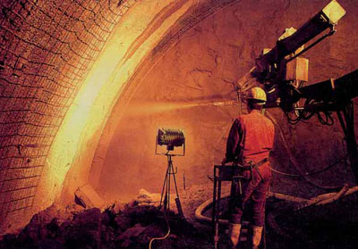
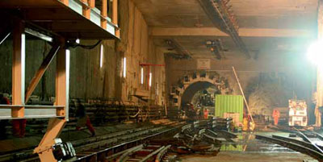
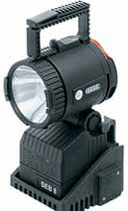
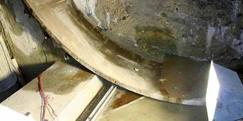
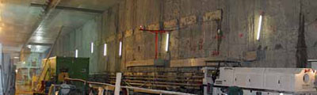
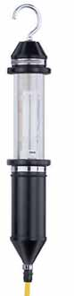

Arbeitsplätze und Verkehrswege im Tunnelbau dürfen von Beschäftigten nur betreten werden, wenn sowohl die Allgemeinbeleuchtung als auch die Sicherheitsbeleuchtung vorhanden sind.
Die mittlere Beleuchtungsstärke an Arbeitsplätzen, Verkehrswegen und in Betriebsräumen muss so bemessen sein, dass Arbeiten sicher durchgeführt und Verkehrswege, auch Flucht- und Rettungswege, sicher begangen werden können.
Die Schutzziele der Arbeitsschutzbestimmungen hinsichtlich der mittleren Beleuchtungsstärke an Arbeitsplätzen und Verkehrswegen sind eingehalten, wenn folgende Mindestbeleuchtungsstärken sichergestellt sind:
|
10 Lux |
|
60 Lux |
|
120 Lux |

 |
|
Aufladbare Handleuchte mit Ladestation und Restleuchtanzeige |
LED-Kopfleuchte mit Restleuchtanzeige – Vorteil: geringes Gewicht, lange Brenndauer, (rechts). |
Auf Vortriebsmaschinen muss die Beleuchtungsstärke im Arbeitsbereich mindestens 100 Lux, auf Zugangswegen mindestens 30 Lux betragen.
Wo erfahrungsgemäß Wartungsarbeiten durchzuführen sind, müssen Steckvorrichtungen für zusätzliche Beleuchtung vorgesehen werden.
Die Sicherheitsbeleuchtung muss bei Ausfall der Allgemeinbeleuchtung selbsttätig und unverzüglich wirksam werden. In vielen Fällen ist es von Vorteil, wenn die Beschäftigten zusätzlich mit einer elektrischen Stollenleuchte oder gleichwertiger Leuchttechnik ausgerüstet sind.
Beleuchtungsstärke (empfohlene Mindestwerte)
|
1 Lux |
|
15 Lux |
Auf Vortriebsmaschinen ist eine Notbeleuchtung zu installieren, die bei Ausfall der Allgemeinbeleuchtung auf der Vortriebsmaschine unabhängig von der Sicherheitsbeleuchtung im Tunnelbereich automatisch aktiv wird. Die zugehörige Stromversorgung muss vor dem Hauptschalter der Vortriebsmaschine direkt an die Niederspannungsversorgung angeschlossen werden.
Die Notbeleuchtung muss mindestens eine Beleuchtungsstärke von 15 Lux für die Dauer von 10 Minuten gewährleisten (s. EN 12336:2003 – Tunnelbaumaschinen – Sicherheitstechnische Anforderungen).
Die Sicherheitsbeleuchtung für Flucht- und Rettungswege ist einzurichten, weil bei Ausfall der allgemeinen Beleuchtung das gefahrlose Verlassen der Tunnelbaustelle durch betriebsbedingte Hindernisse (z.B. abgestellte Maschinen, enge Verkehrswege) und Gefahrstellen (z.B. Gruben, Gräben) nicht gewährleistet ist.
Die Brenndauer der Beleuchtung ist auf die Länge der Flucht- und Rettungswege abzustimmen, sie muss aber mindestens 1 Stunde betragen. Dabei ist eine Mindestbeleuchtungsstärke von 1 Lux erforderlich, gemessen 0,20 m über der Sohle.
Die Sicherheitsbeleuchtung für Arbeitsplätze, bei denen durch Ausfall der Beleuchtung eine besondere Gefährdung auftreten kann, muss so angelegt sein, dass das gefahrlose Beenden erforderlicher Tätigkeiten möglich ist. Die Brenndauer der Sicherheitsbeleuchtung ist auf diese Tätigkeiten abzustimmen.
Eine Sicherheitsbeleuchtung für Arbeitsplätze mit besonderer Gefährdung ist dort einzurichten, wo bei Ausfall der Beleuchtung eine unmittelbare Unfallgefahr besteht, z.B. bei Arbeiten:
Wegen der großen Bedeutung der Sicherheitsbeleuchtung muss das Installationsmaterial zusätzliche Anforderungen erfüllen, z. B.:
Leuchten müssen VDE 0711-1//ÖVE/ÖNORM EN 60598-1 entsprechen und zusätzlich folgenden Anforderungen genügen:

Abeitsplatzbeleuchtung

Leuchten wegen geringerer Verstaubung und besserer Wegbeleuchtung senkrecht angebracht
Handleuchten müssen mindestens in der Schutzart IP 55 ausgeführt sein. Sie müssen den Festlegungen in VDE 0711-2-8//ÖVE/ ÖNORM EN 60598-2-8 entsprechen.
Handleuchten müssen der Schutzklasse II oder der Schutzklasse III entsprechen. Körper, Griff und äußere Teile der Fassung müssen aus Isolierstoff bestehen.
Handleuchten müssen mit einem Schutzglas und einem Schutzkorb ausgerüstet sein.
Schalter von Handleuchten müssen für deren maximale Stromaufnahme, mindestens aber für 4 A ausgelegt und so eingebaut sein, dass sie vor mechanischen Beschädigungen geschützt sind. Die Leitungseinführung muss über eine ausreichende Zugentlastung und einen Knickschutz verfügen.
Als Netzanschlussleitung ist bis zu einer Länge von 5 m der Typ H05RN-F oder eine mindestens gleichwertige Bauart zulässig, soweit nicht die Normenreihe VDE 0711//ÖVE/ÖNORM EN 60598 eine andere Bauart fordert.

Eine Zentralbatterie muss
Der Ersatzstromerzeuger muss bei Ausfall der Primär-Stromversorgung